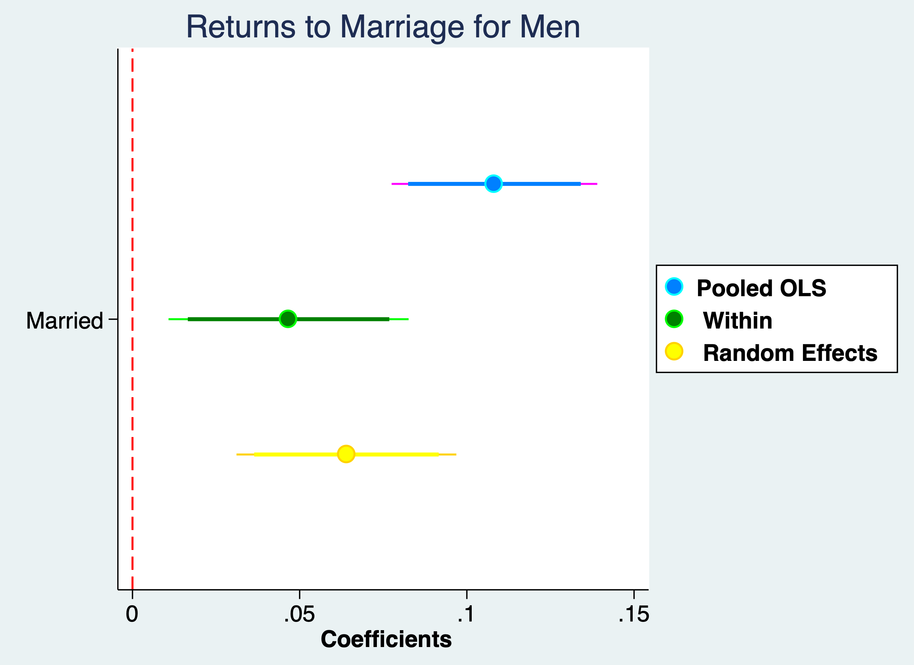

Chapter 3 Random Effects
We will implement our Random Effects estimator in Stata. It is similar to fixed effects. We use xtreg, but we use the re option.
Remember that we need to test our main random effects assumption to see if an random effects estiamte is appropriate:
\[ Cov(x_{i,j},a_i)=0 \]
3.1 Returns to Marriage for Men
Lesson: We can test to see if random effects is an appropriate assumption.
We’ll use three methods to estimate the returns to marriage for men: Pooled OLS, Fixed Effects (Within), and Random Effects. We cannot estimate the coefficients for Black and Latinos.
We can use the wagepan data again to estimate the returns to marriage for men. We will compare the Pooled OLS, FE (Within), and Random Effects estimates
Set Panel
/Users/Sam/Desktop/Econ 645/Data/Wooldridge
panel variable: nr (strongly balanced)
time variable: year, 1980 to 1987
delta: 1 unitPooled OLS
reg lwage educ i.black i.hisp exper expersq married union i.d8*
eststo m1: quietly reg lwage educ i.black i.hisp exper expersq married union i.d8* Source | SS df MS Number of obs = 4,360
-------------+---------------------------------- F(14, 4345) = 72.46
Model | 234.048277 14 16.7177341 Prob > F = 0.0000
Residual | 1002.48136 4,345 .230720682 R-squared = 0.1893
-------------+---------------------------------- Adj R-squared = 0.1867
Total | 1236.52964 4,359 .283672779 Root MSE = .48033
------------------------------------------------------------------------------
lwage | Coef. Std. Err. t P>|t| [95% Conf. Interval]
-------------+----------------------------------------------------------------
educ | .0913498 .0052374 17.44 0.000 .0810819 .1016177
1.black | -.1392342 .0235796 -5.90 0.000 -.1854622 -.0930062
1.hisp | .0160195 .0207971 0.77 0.441 -.0247535 .0567925
exper | .0672345 .0136948 4.91 0.000 .0403856 .0940834
expersq | -.0024117 .00082 -2.94 0.003 -.0040192 -.0008042
married | .1082529 .0156894 6.90 0.000 .0774937 .1390122
union | .1824613 .0171568 10.63 0.000 .1488253 .2160973
1.d81 | .05832 .0303536 1.92 0.055 -.0011886 .1178286
1.d82 | .0627744 .0332141 1.89 0.059 -.0023421 .1278909
1.d83 | .0620117 .0366601 1.69 0.091 -.0098608 .1338843
1.d84 | .0904672 .0400907 2.26 0.024 .011869 .1690654
1.d85 | .1092463 .0433525 2.52 0.012 .0242533 .1942393
1.d86 | .1419596 .046423 3.06 0.002 .0509469 .2329723
1.d87 | .1738334 .049433 3.52 0.000 .0769194 .2707474
_cons | .0920558 .0782701 1.18 0.240 -.0613935 .2455051
------------------------------------------------------------------------------
Pooled OLS shows a marriage premium of:
11.432957The Pooled OLS data are likley upward biased - self-selection into marriage and we will have positive serial correlation so we really should cluster our standard errors by the group id.
Fixed Effects (Within)
note: educ omitted because of collinearity
note: 1.black omitted because of collinearity
note: 1.hisp omitted because of collinearity
note: 1.d87 omitted because of collinearity
Fixed-effects (within) regression Number of obs = 4,360
Group variable: nr Number of groups = 545
R-sq: Obs per group:
within = 0.1806 min = 8
between = 0.0005 avg = 8.0
overall = 0.0635 max = 8
F(10,3805) = 83.85
corr(u_i, Xb) = -0.1212 Prob > F = 0.0000
------------------------------------------------------------------------------
lwage | Coef. Std. Err. t P>|t| [95% Conf. Interval]
-------------+----------------------------------------------------------------
educ | 0 (omitted)
1.black | 0 (omitted)
1.hisp | 0 (omitted)
exper | .1321464 .0098247 13.45 0.000 .1128842 .1514087
expersq | -.0051855 .0007044 -7.36 0.000 -.0065666 -.0038044
married | .0466804 .0183104 2.55 0.011 .0107811 .0825796
union | .0800019 .0193103 4.14 0.000 .0421423 .1178614
1.d81 | .0190448 .0203626 0.94 0.350 -.0208779 .0589674
1.d82 | -.011322 .0202275 -0.56 0.576 -.0509798 .0283359
1.d83 | -.0419955 .0203205 -2.07 0.039 -.0818357 -.0021553
1.d84 | -.0384709 .0203144 -1.89 0.058 -.0782991 .0013573
1.d85 | -.0432498 .0202458 -2.14 0.033 -.0829434 -.0035562
1.d86 | -.0273819 .0203863 -1.34 0.179 -.0673511 .0125872
1.d87 | 0 (omitted)
_cons | 1.02764 .0299499 34.31 0.000 .9689201 1.086359
-------------+----------------------------------------------------------------
sigma_u | .4009279
sigma_e | .35099001
rho | .56612236 (fraction of variance due to u_i)
------------------------------------------------------------------------------
F test that all u_i=0: F(544, 3805) = 9.64 Prob > F = 0.0000
Fixed Effects model shows a marriage premium of:
4.7787041We use estimates store to store our FE (Within) estimates to compare
estimates store femodel
eststo m2: quietly xtreg lwage educ i.black i.hisp exper expersq married union i.d8*, feRandom Effects
We can use the theta option to find the lambda-hat GLS transformaton https://www.stata.com/manuals/xtxtreg.pdf
xtreg lwage educ i.black i.hisp exper expersq married union i.d8*, re theta
eststo m3: quietly xtreg lwage educ i.black i.hisp exper expersq married union i.d8*, reRandom-effects GLS regression Number of obs = 4,360
Group variable: nr Number of groups = 545
R-sq: Obs per group:
within = 0.1799 min = 8
between = 0.1860 avg = 8.0
overall = 0.1830 max = 8
Wald chi2(14) = 957.77
corr(u_i, X) = 0 (assumed) Prob > chi2 = 0.0000
theta = .64291089
------------------------------------------------------------------------------
lwage | Coef. Std. Err. z P>|z| [95% Conf. Interval]
-------------+----------------------------------------------------------------
educ | .0918763 .0106597 8.62 0.000 .0709836 .1127689
1.black | -.1393767 .0477228 -2.92 0.003 -.2329117 -.0458417
1.hisp | .0217317 .0426063 0.51 0.610 -.0617751 .1052385
exper | .1057545 .0153668 6.88 0.000 .0756361 .1358729
expersq | -.0047239 .0006895 -6.85 0.000 -.0060753 -.0033726
married | .063986 .0167742 3.81 0.000 .0311091 .0968629
union | .1061344 .0178539 5.94 0.000 .0711415 .1411273
1.d81 | .040462 .0246946 1.64 0.101 -.0079385 .0888626
1.d82 | .0309212 .0323416 0.96 0.339 -.0324672 .0943096
1.d83 | .0202806 .041582 0.49 0.626 -.0612186 .1017798
1.d84 | .0431187 .0513163 0.84 0.401 -.0574595 .1436969
1.d85 | .0578155 .0612323 0.94 0.345 -.0621977 .1778286
1.d86 | .0919476 .0712293 1.29 0.197 -.0476592 .2315544
1.d87 | .1349289 .0813135 1.66 0.097 -.0244427 .2943005
_cons | .0235864 .1506683 0.16 0.876 -.271718 .3188907
-------------+----------------------------------------------------------------
sigma_u | .32460315
sigma_e | .35099001
rho | .46100216 (fraction of variance due to u_i)
------------------------------------------------------------------------------
The Random Effects model shows a marriage premium of:
6.6077497Our lambda-hat is 0.643, which means it is closer to the FE estimator than the Pooled OLS estimator.
Hausman Test
We will use the hausman command to test the main random effects assumption \(Cov(x_{i,j},a_i)=0\). First we specify the command hausman, then we input the two models. We stored our fixed effects model estimates into femodel. We will get our latest estimates from the random effects model with “.”. We will also use the option sigmamore.
Note: the rank of the differenced variance matrix (5) does not equal the number of
coefficients being tested (10); be sure this is what you expect, or there may be
problems computing the test. Examine the output of your estimators for anything
unexpected and possibly consider scaling your variables so that the coefficients are
on a similar scale.
---- Coefficients ----
| (b) (B) (b-B) sqrt(diag(V_b-V_B))
| femodel . Difference S.E.
-------------+----------------------------------------------------------------
exper | .1321464 .1057545 .0263919 .
expersq | -.0051855 -.0047239 -.0004616 .0001533
married | .0466804 .063986 -.0173057 .0074632
union | .0800019 .1061344 -.0261326 .0074922
1.d81 | .0190448 .040462 -.0214172 .
1.d82 | -.011322 .0309212 -.0422431 .
1.d83 | -.0419955 .0202806 -.0622762 .
1.d84 | -.0384709 .0431187 -.0815896 .
1.d85 | -.0432498 .0578155 -.1010653 .
1.d86 | -.0273819 .0919476 -.1193295 .
------------------------------------------------------------------------------
b = consistent under Ho and Ha; obtained from xtreg
B = inconsistent under Ha, efficient under Ho; obtained from xtreg
Test: Ho: difference in coefficients not systematic
chi2(5) = (b-B)'[(V_b-V_B)^(-1)](b-B)
= 26.22
Prob>chi2 = 0.0001
(V_b-V_B is not positive definite)We reject the null hypothesis and \(a_i\) is correlated with the explanatory variables, so the random effects model is likely not appropriate.
esttab m1 m2 m3, drop(0.black 0.hisp 0.d8*) mtitles("Pooled OLS" "Within Model" "RE Model")
display (exp(.108)-1)*100
display (exp(.0467)-1)*100
display (exp(.064)-1)*100 (1) (2) (3)
Pooled OLS Within Model RE Model
------------------------------------------------------------
educ 0.0913*** 0 0.0919***
(17.44) (.) (8.62)
1.black -0.139*** 0 -0.139**
(-5.90) (.) (-2.92)
1.hisp 0.0160 0 0.0217
(0.77) (.) (0.51)
exper 0.0672*** 0.132*** 0.106***
(4.91) (13.45) (6.88)
expersq -0.00241** -0.00519*** -0.00472***
(-2.94) (-7.36) (-6.85)
married 0.108*** 0.0467* 0.0640***
(6.90) (2.55) (3.81)
union 0.182*** 0.0800*** 0.106***
(10.63) (4.14) (5.94)
1.d81 0.0583 0.0190 0.0405
(1.92) (0.94) (1.64)
1.d82 0.0628 -0.0113 0.0309
(1.89) (-0.56) (0.96)
1.d83 0.0620 -0.0420* 0.0203
(1.69) (-2.07) (0.49)
1.d84 0.0905* -0.0385 0.0431
(2.26) (-1.89) (0.84)
1.d85 0.109* -0.0432* 0.0578
(2.52) (-2.14) (0.94)
1.d86 0.142** -0.0274 0.0919
(3.06) (-1.34) (1.29)
1.d87 0.174*** 0 0.135
(3.52) (.) (1.66)
_cons 0.0921 1.028*** 0.0236
(1.18) (34.31) (0.16)
------------------------------------------------------------
N 4360 4360 4360
------------------------------------------------------------
t statistics in parentheses
* p<0.05, ** p<0.01, *** p<0.001
11.404775
4.780762
6.6092399We can see that the marriage premium falls from 11.4% in Pooled OLS to 4.8% in Fixed Effects. If we didn’t reject our RE model, it would have been 6.6%.
The difference between the 11.4% Pooled OLS and the 4.8% in the Within Model might comes from self-selection in marriage (they would have made more money even if they weren’t married), and employers paying married men more if marriage is a sign of stability. But, we cannot distinguish these two hypothesis with this research design.
Plot the Coefficients
quietly reg lwage educ i.black i.hisp exper expersq married union i.d8*
estimates store pooled
quietly xtreg lwage educ i.black i.hisp exper expersq married union i.d8*, fe
estimates store fe
quietly xtreg lwage educ i.black i.hisp exper expersq married union i.d8*, re theta
estimates store re
coefplot ///
(pooled, label("{bf:Pooled OLS}") mcolor(midblue) mlcolor(cyan) ///
ciopts(lcolor(magenta midblue))) /// options for first group
(fe, label("{bf: Within}") mcolor(green) mlcolor(lime) ///
ciopts(lcolor(lime green))) /// options for second group
(re, label("{bf: Random Effects}") mcolor(yellow) mlcolor(gold) ///
ciopts(lcolor(gold yellow))), /// options for third group
title("Returns to Marriage for Men") ///
keep(married) ///
xline(0, lcolor(red) lpattern(dash) lwidth(medium)) scheme(jet_white) ///
xtitle("{bf: Coefficients}") ///
graphregion(margin(small)) ///
coeflabels(married="Married") ///
msize(large) mcolor(%85) mlwidth(medium) msymbol(circle) /// marker options
levels(95 90) ciopts(lwidth(medthick thick) recast(rspike rcap)) ///ci options for all groups
legend(ring(1) col(1) pos(3) size(medsmall))
graph export "/Users/Sam/Desktop/Econ 645/Stata/week4_married_returns.png", replace
3.2 Airline prices and market concentration
We will assess concentration of airline on airfare. Our model:
\[ ln(fare_{i,t})=\beta_0 + \beta_1 concen_{i,t} + \beta_2 ln(dist_{i,t}) + \beta_3 (ln(dist))^2 + a_i + a_t + \varepsilon_{i,t} \]
Estimate the Pooled OLS with time binaries
cd "/Users/Sam/Desktop/Econ 645/Data/Wooldridge"
use "airfare.dta", clear
reg lfare concen ldist ldistsq i.y99 i.y00/Users/Sam/Desktop/Econ 645/Data/Wooldridge
Source | SS df MS Number of obs = 4,596
-------------+---------------------------------- F(5, 4590) = 627.18
Model | 355.197587 5 71.0395174 Prob > F = 0.0000
Residual | 519.896787 4,590 .113267274 R-squared = 0.4059
-------------+---------------------------------- Adj R-squared = 0.4052
Total | 875.094374 4,595 .190444913 Root MSE = .33655
------------------------------------------------------------------------------
lfare | Coef. Std. Err. t P>|t| [95% Conf. Interval]
-------------+----------------------------------------------------------------
concen | .3609856 .0300677 12.01 0.000 .3020384 .4199327
ldist | -.9018838 .1282905 -7.03 0.000 -1.153395 -.6503727
ldistsq | .1030514 .0097268 10.59 0.000 .0839822 .1221207
1.y99 | .0272979 .0121656 2.24 0.025 .0034475 .0511483
1.y00 | .0893211 .012169 7.34 0.000 .0654641 .1131782
_cons | 6.219743 .4206248 14.79 0.000 5.395116 7.04437
------------------------------------------------------------------------------What is the associated change in airfare with a 10-percentage point increase in market concentration?
Variable | Obs Mean Std. Dev. Min Max
-------------+---------------------------------------------------------
concen | 4,596 .6101149 .196435 .1605 1What does the quadratic on distance mean? Decreasing at a increasing rate - use quadratic formula for when distance on airfare is 0.
Set Panel
Set Panel
panel variable: id (strongly balanced)
time variable: year, 1997 to 2000
delta: 1 unitEstimate a Pooled OLS
Source | SS df MS Number of obs = 4,596
-------------+---------------------------------- F(5, 4590) = 627.18
Model | 355.197587 5 71.0395174 Prob > F = 0.0000
Residual | 519.896787 4,590 .113267274 R-squared = 0.4059
-------------+---------------------------------- Adj R-squared = 0.4052
Total | 875.094374 4,595 .190444913 Root MSE = .33655
------------------------------------------------------------------------------
lfare | Coef. Std. Err. t P>|t| [95% Conf. Interval]
-------------+----------------------------------------------------------------
concen | .3609856 .0300677 12.01 0.000 .3020384 .4199327
ldist | -.9018838 .1282905 -7.03 0.000 -1.153395 -.6503727
ldistsq | .1030514 .0097268 10.59 0.000 .0839822 .1221207
1.y99 | .0272979 .0121656 2.24 0.025 .0034475 .0511483
1.y00 | .0893211 .012169 7.34 0.000 .0654641 .1131782
_cons | 6.219743 .4206248 14.79 0.000 5.395116 7.04437
------------------------------------------------------------------------------Estimate a Random Effects model
Random-effects GLS regression Number of obs = 4,596
Group variable: id Number of groups = 1,149
R-sq: Obs per group:
within = 0.1282 min = 4
between = 0.4179 avg = 4.0
overall = 0.4030 max = 4
Wald chi2(5) = 1331.49
corr(u_i, X) = 0 (assumed) Prob > chi2 = 0.0000
theta = .83489895
------------------------------------------------------------------------------
lfare | Coef. Std. Err. z P>|z| [95% Conf. Interval]
-------------+----------------------------------------------------------------
concen | .216343 .0265686 8.14 0.000 .1642694 .2684166
ldist | -.8544998 .2464622 -3.47 0.001 -1.337557 -.3714428
ldistsq | .0977308 .0186343 5.24 0.000 .0612083 .1342532
1.y99 | .0255419 .0038794 6.58 0.000 .0179385 .0331454
1.y00 | .0870883 .0038876 22.40 0.000 .0794686 .0947079
_cons | 6.232589 .8098919 7.70 0.000 4.64523 7.819948
-------------+----------------------------------------------------------------
sigma_u | .31930578
sigma_e | .1069025
rho | .89920879 (fraction of variance due to u_i)
------------------------------------------------------------------------------Estimate a FE model
note: ldist omitted because of collinearity
note: ldistsq omitted because of collinearity
Fixed-effects (within) regression Number of obs = 4,596
Group variable: id Number of groups = 1,149
R-sq: Obs per group:
within = 0.1286 min = 4
between = 0.0576 avg = 4.0
overall = 0.0102 max = 4
F(3,3444) = 169.47
corr(u_i, Xb) = -0.2143 Prob > F = 0.0000
------------------------------------------------------------------------------
lfare | Coef. Std. Err. t P>|t| [95% Conf. Interval]
-------------+----------------------------------------------------------------
concen | .177761 .0294665 6.03 0.000 .1199873 .2355346
ldist | 0 (omitted)
ldistsq | 0 (omitted)
1.y99 | .0250736 .0038791 6.46 0.000 .017468 .0326791
1.y00 | .0864927 .0038892 22.24 0.000 .0788673 .0941181
_cons | 4.959254 .0183174 270.74 0.000 4.92334 4.995168
-------------+----------------------------------------------------------------
sigma_u | .43441394
sigma_e | .1069025
rho | .94290028 (fraction of variance due to u_i)
------------------------------------------------------------------------------
F test that all u_i=0: F(1148, 3444) = 60.09 Prob > F = 0.0000Compare
Compare
(1) (2) (3)
OLS RE FE
------------------------------------------------------------
concen 0.361*** 0.216*** 0.178***
(12.01) (8.14) (6.03)
ldist -0.902*** -0.854*** 0
(-7.03) (-3.47) (.)
ldistsq 0.103*** 0.0977*** 0
(10.59) (5.24) (.)
1.y99 0.0273* 0.0255*** 0.0251***
(2.24) (6.58) (6.46)
1.y00 0.0893*** 0.0871*** 0.0865***
(7.34) (22.40) (22.24)
_cons 6.220*** 6.233*** 4.959***
(14.79) (7.70) (270.74)
------------------------------------------------------------
N 4596 4596 4596
------------------------------------------------------------
t statistics in parentheses
* p<0.05, ** p<0.01, *** p<0.001